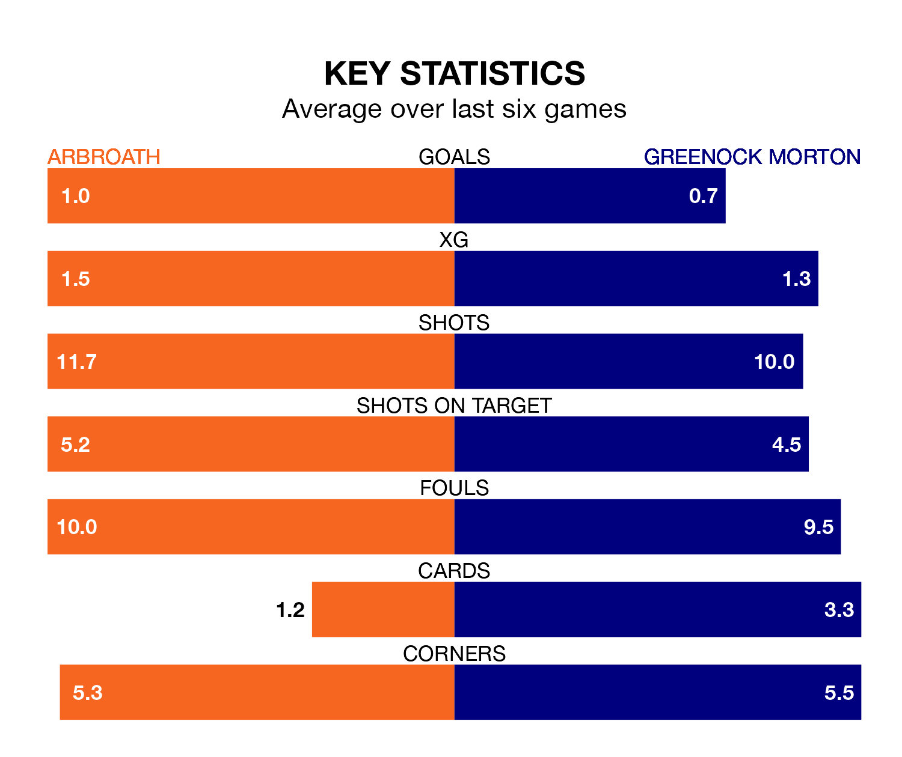

Saturday's match at Gayfield Park sees the league's two bottom sides face each other, as Arbroath host rock-bottom Greenock Morton.
Arbroath have picked up 12 points from their first 12 Scottish Championship games, with four wins and no draws.
That is four points more than the Ton have collected, having won two and drawn two.
In Derek Gaston, Arbroath can rely on one of the league's safest pair of hands. He has kept three clean sheets in his 12 appearances this season, and only one other 'keeper – Dundee United's Jack Walton – has been able to prevent the opposition scoring on more occasions in Scottish Championship.
In Greenock Morton's net, Jamie MacDonald has two clean sheets in 12 games.
The hosts are in bad form in Scottish Championship, with one win and five losses from their last six games.
With a win and a draw over that period, the Ton's form is slightly better – they have taken four points from 18, compared to Arbroath's three.
With 12 goals in 12 games so far this season, the away side are the league's lowest scorers with 1.0 goals per game. And they are conceding more than average, letting in 22 goals at a rate of 1.8 per game.
Arbroath are also below average scorers, with 1.3 goals per game, compared to a league average of 1.4. They have conceded 2.1 goals per game.
In the last three years, Arbroath and Greenock Morton have played each other on 11 occasions. Arbroath won six of them and they drew five times.
On average, Arbroath scored 1.5 goals and the Ton 0.6 in those matches.
Their last meeting was on August 26, when Arbroath won 3-0 away.
Arbroath's last match was on November 28, a 3-0 loss against Dunfermline Athletic.
Greenock Morton lost 2-1 against Partick Thistle last time out, on November 11, with Grant Gillespie on the scoresheet.
